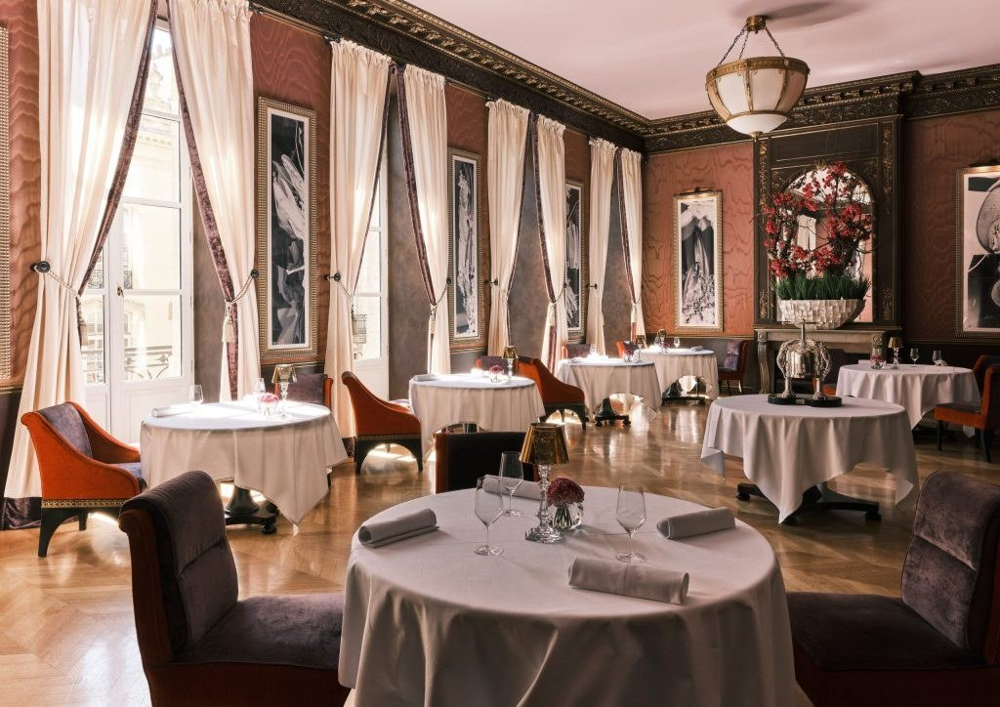
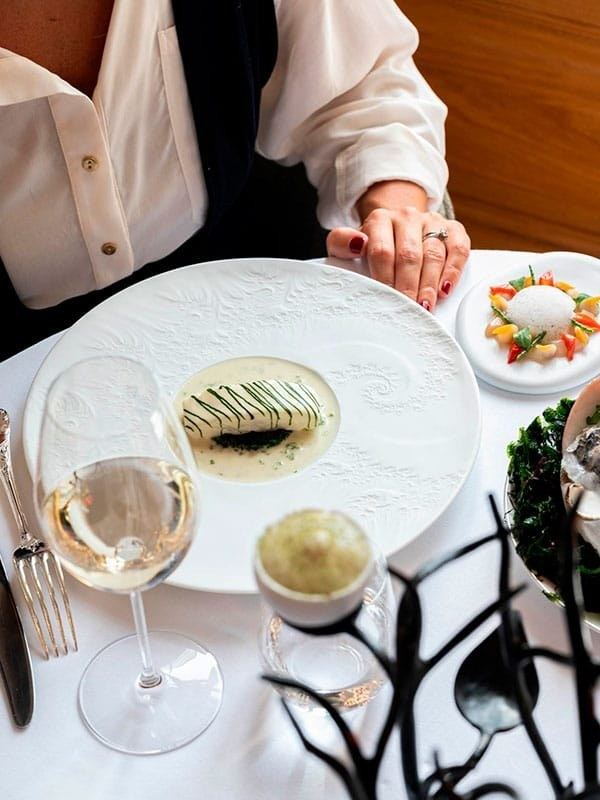
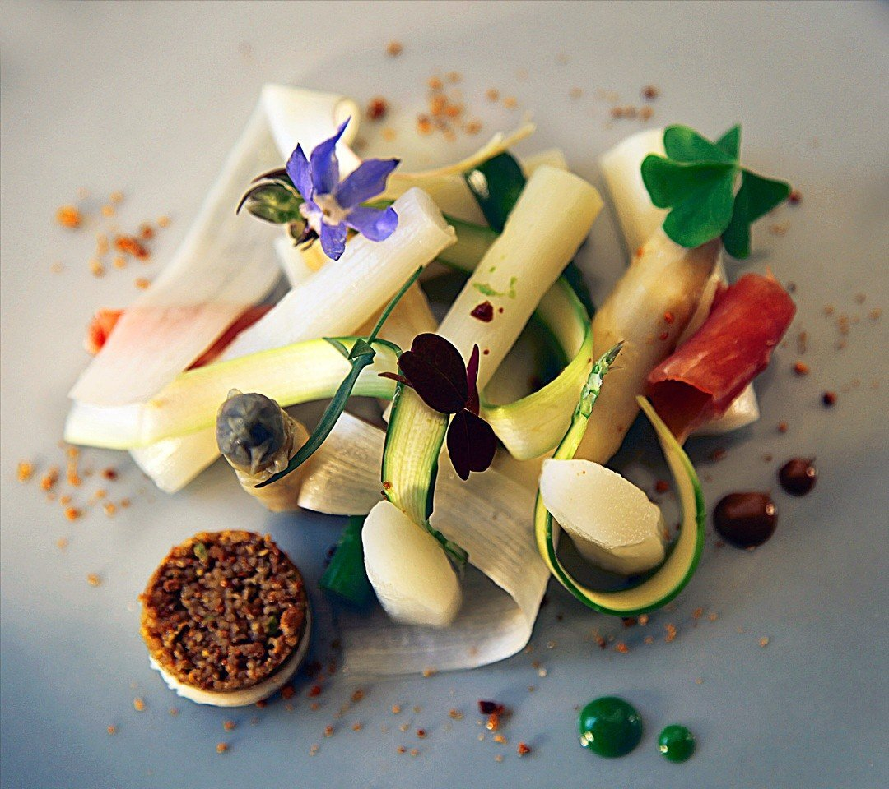
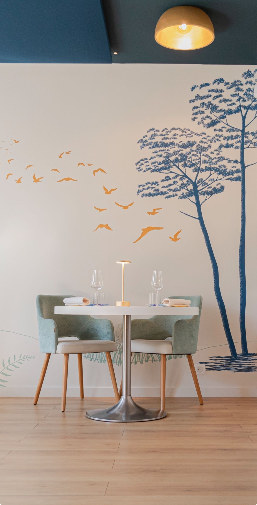
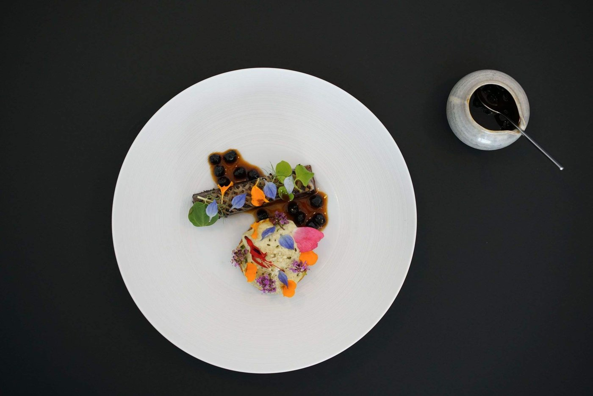
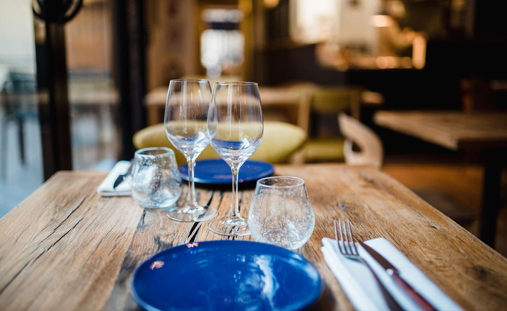

Les 8 meilleurs restaurants de Bordeaux en 2026
Deux tables à deux étoiles, une première étoile décrochée cette année, et une grande maison de la place de la Bourse qui a fermé sans que les classements le signalent. Voici la carte bordelaise telle qu'elle est vraiment.

Bordeaux n'est pas Paris, et c'est tant mieux. La scène bordelaise respire une confiance tranquille, loin des effets de manche. Ici, on cuisine avec le terroir plutôt que contre lui, et la gastronomie s'est démocratisée : sur ces huit adresses, la moitié sert sous 100 €. Voici la carte telle qu'elle est en 2026, avec les adresses exactes.
L'essentielBordeaux à table en 2026
- Deux tables à deux étoiles : Maison Nouvelle et Le Pressoir d'Argent Gordon Ramsay.
- Une première étoile cette année : Cent33, la maison de Fabien Beaufour, dont le nom vient de son adresse au 133 rue du Jardin Public.
- Une grande table a fermé : L'Observatoire du Gabriel, place de la Bourse, deux étoiles. Elle figure encore en tête de nombreuses sélections.
- La meilleure table de la rive droite est étoilée : L'Oiseau Bleu, avenue Thiers, qui a quitté le cours de Verdun en 2008.
Ce que nous avons vérifié
Ce guide part des adresses les plus citées, puis contrôle ce qui est contrôlable : la maison est-elle ouverte, à quelle adresse exacte, avec quelles distinctions à jour. À Bordeaux, l'exercice a rapporté gros : une des grandes tables de la ville a fermé, une autre a changé de rive il y a dix-sept ans sans que les listes le notent, et la promotion de l'année manque à la plupart d'entre elles. Les critères éditoriaux sont ensuite ceux de notre grille.
L'Observatoire du Gabriel. La table à deux étoiles de la place de la Bourse, dans l'immeuble du Gabriel, a fermé. Son chef, Bertrand Noeureuil, a rejoint le Four Seasons George V à Paris à l'été 2026 pour y diriger L'Orangerie. La fermeture s'explique par des coûts d'exploitation devenus intenables. Elle figure encore en tête de nombreuses sélections bordelaises.
Les 8 adresses
-
01
Maison Nouvelle
Bordeaux · Gastronomie
2 étoiles Michelin
Une table de Maison Nouvelle, rue Rode. Photo Maison Nouvelle. Maison Nouvelle est la table de Philippe Etchebest, ouverte fin 2021 rue Rode, sur la place du marché des Chartrons. Elle a décroché sa première étoile presque aussitôt, puis la seconde, confirmée dans l'édition 2026 du Guide Michelin.
Elle prend cette année la place laissée vacante en tête de la ville : L'Observatoire du Gabriel, l'autre deux-étoiles bordelais, a fermé. Le format est resserré, la salle travaillée jusqu'au plafond, et le service se concentre sur quelques jours par semaine, le soir en semaine, midi et soir le vendredi et le samedi.
Pour qui ? Les grandes occasions, et ceux qui veulent voir où se situe le plafond gastronomique de la ville.
- Adresse11 rue Rode, 33000 Bordeaux
- ChefPhilippe Etchebest
- ServiceDu mardi au jeudi le soir, vendredi et samedi midi et soir
- DistinctionDeux étoiles au Guide Michelin 2026
-
02
Le Pressoir d'Argent Gordon Ramsay
Bordeaux · Gastronomie française
2 étoiles MichelinInterContinentalLa salle du Pressoir d'Argent, à l'InterContinental Bordeaux. Photo Le Pressoir d'Argent Gordon Ramsay. Gordon Ramsay à Bordeaux, c'est un pari que peu auraient osé faire. Il fonctionne depuis 2015, parce que le chef britannique a eu la sagesse de dialoguer avec la tradition française plutôt que d'imposer son style. La maison est au premier étage de l'InterContinental Bordeaux Le Grand Hôtel, face au Grand-Théâtre.
Le restaurant tire son nom d'une pièce rare posée au centre de la salle : une presse à homard en argent massif signée Christofle, l'une des cinq encore existantes au monde. Le décor respire le luxe discret, boiseries, lumière tamisée, service au cordeau. L'assiette est un classique revisité avec rigueur : sauces justes, cuissons précises. Ce qui peut déranger : le prix, et un service très protocolaire.
Pour qui ? Les amateurs de gastronomie classique qui veulent du Michelin sans les affectations.
- AdresseInterContinental Bordeaux, 2-5 place de la Comédie, 33000 Bordeaux
- ServiceDu mardi au samedi, le soir
- DistinctionDeux étoiles Michelin depuis 2017
- BudgetOrdre de grandeur : 195 à 295 €
-
03
Cent33
Bordeaux · Cuisine d'auteur
1 étoile Michelin 2026Nouvelle étoileFabien BeaufourLe fait bordelais de l'année : Fabien Beaufour a décroché sa première étoile Michelin en 2026 avec Cent33. Le nom vient de l'adresse, 133 rue du Jardin Public, et non d'une quelconque référence au département.
La cuisine est signée d'un chef passé par l'étranger, ce qui se sent dans les torsions apportées au répertoire français. Le décor est chaleureux, un peu bohème, avec des tables serrées où l'on entend les conversations voisines : c'est voulu, et c'est vivant. Les assiettes arrivent au rythme qu'on choisit.
Pour qui ? Les jeunes couples, les groupes d'amis, et ceux qui veulent goûter la promotion de l'année avant que les réservations ne se ferment.
- Adresse133 rue du Jardin Public, 33000 Bordeaux
- ChefFabien Beaufour
- ServiceDu mardi au samedi, midi et soir
- DistinctionPremière étoile Michelin en 2026
-
04
Soléna
Bordeaux · Cuisine de marché d'auteur
1 étoile MichelinVictor Ostronzec
Une assiette de Soléna, rue Chauffour. Photo Soléna. Victor Ostronzec ne fait pas de cuisine compliquée, il fait de la cuisine vraie. Installé rue Chauffour depuis 2016, il construit ses menus autour de ce que le marché a de beau le matin même. Pas de carte figée, pas de concept, juste du produit.
Le décor est sobre, presque austère, et c'est assumé : on ne vient pas pour les murs. L'assiette, elle, est technique et souvent joliment dressée, avec des associations intelligentes sans être compliquées. Ce qui peut déranger : l'absence de menu fixe frustre les indécis, et le service manque parfois de chaleur.
Pour qui ? Les amateurs de cuisine de marché, et ceux qui acceptent de faire confiance au chef.
- Adresse5 rue Chauffour, 33000 Bordeaux
- ChefVictor Ostronzec, depuis 2016
- DistinctionUne étoile au Guide Michelin
- BudgetOrdre de grandeur : 42 à 125 €
-
05
L'Oiseau Bleu
Bordeaux · Cuisine d'auteur
1 étoile MichelinFrançois Sauvêtre
La salle de L'Oiseau Bleu, avenue Thiers, à la Bastide. Photo L'Oiseau Bleu. L'Oiseau Bleu est l'une des rares grandes tables de la rive droite. La maison a quitté le cours de Verdun en 2008 pour s'installer avenue Thiers, dans le quartier de la Bastide, ce que beaucoup de listes n'ont toujours pas enregistré.
François Sauvêtre y dirige les cuisines depuis l'été 2018. Le décor mêle modernité et chaleur, les tables sont espacées, le service est attentif sans être étouffant. L'assiette cherche à émouvoir plutôt qu'à épater : saveurs subtiles, textures travaillées. Les menus vont de 70 à 130 €.
Pour qui ? Les amateurs de cuisine subtile, et les couples en quête d'un moment intime.
- Adresse127 avenue Thiers, 33100 Bordeaux
- QuartierLa Bastide, rive droite
- ChefFrançois Sauvêtre, depuis 2018
- Menus70 à 130 €
-
06
Inima
Bordeaux · Cuisine végétale d'auteur
Oxana Cretu
Une assiette d'Inima, rue du Palais-Gallien. Photo Inima. Oxana Cretu est une cheffe moldave installée rue du Palais-Gallien. Elle a rebaptisé sa maison Inima en 2023, mot qui signifie « de tout cœur » en moldave, et elle s'est fait connaître autant par sa cuisine que par son engagement contre le sexisme en cuisine.
La carte fait la part belle au végétal, fleurs comprises, avec un vrai souci de durabilité. Le décor est épuré, presque minimaliste, avec une belle lumière naturelle. Les saveurs sont franches, les textures surprenantes, les associations audacieuses mais justes. Ce qui peut déranger : une certaine austérité du décor, un service parfois distant.
Pour qui ? Ceux qui aiment les tables avec une vraie personnalité, et les curieux de cuisine végétale qui ne renonce à rien.
- Adresse48 rue du Palais-Gallien, 33000 Bordeaux
- CheffeOxana Cretu
- BudgetOrdre de grandeur : 35 à 115 €
-
07
Zéphirine
Bordeaux · Auberge urbaine et comptoir
Table de quartier
Une table de Zéphirine, rue de l'Abbé-de-l'Épée. Photo Zéphirine. Zéphirine se définit comme une auberge urbaine doublée d'un comptoir gourmand, rue de l'Abbé-de-l'Épée. On y déjeune, on y dîne, et on y achète de quoi rapporter : le format tient autant de la table que de l'épicerie.
Le décor est chaleureux, bohème, avec des plantes partout. La cuisine met le végétal et le local au premier plan sans en faire un dogme, et sans chercher à imiter la viande. Les légumes sont traités avec le respect qu'ils méritent, les saveurs sont franches. Ce qui peut frustrer : le service est parfois un peu rustique.
Pour qui ? Les amateurs de cuisine végétale sincère, et ceux qui aiment repartir avec un bocal.
- Adresse62 rue de l'Abbé-de-l'Épée, 33000 Bordeaux
- FormatAuberge urbaine et comptoir gourmand
- BudgetOrdre de grandeur : 55 à 65 €
- Téléphone09 72 45 55 36
-
08
Le Petit Commerce
Bordeaux · Poissons et fruits de mer
Institution bordelaiseLe Petit Commerce est l'institution du poisson à Bordeaux, rue du Parlement Saint-Pierre, en plein centre. Le décor est authentique, un peu vieillot, les murs couverts de photos, les tables serrées, l'ambiance bruyante et vivante.
Chaque jour, la carte se compose à partir des poissons sauvages et des coquillages arrivés en direct du port d'Arcachon : moules, pulpitos, encornets, couteaux, espadon, joue de lotte, merlu, saint-pierre, sole de Royan. Pas de sauce compliquée, pas de présentation pour photographie, juste du produit. Ce qui peut déranger : le décor fatigué et un service parfois brusque.
Pour qui ? Les amateurs de poisson honnête, les groupes d'amis, et ceux qui veulent du vrai Bordeaux.
- Adresse22 rue du Parlement Saint-Pierre, 33000 Bordeaux
- ApprovisionnementArrivage direct du port d'Arcachon
- BudgetOrdre de grandeur : 25 à 65 €
- Téléphone05 56 79 76 58
Ce que la carte bordelaise raconte
Le premier fait de l'année est une perte. L'Observatoire du Gabriel, deux étoiles sur la place de la Bourse, a fermé pour des raisons économiques, et son chef est parti diriger L'Orangerie au Four Seasons George V. Une ville qui perd une table de ce rang, ça se remarque.
Le deuxième est une arrivée. Cent33 décroche sa première étoile, ce qui confirme que la croissance gastronomique bordelaise vient d'en bas plutôt que du haut : ce ne sont pas les palaces qui bougent, ce sont les maisons de quartier qui montent.
Le troisième est géographique. La meilleure nouvelle de la rive droite, L'Oiseau Bleu, est étoilée depuis des années, avenue Thiers, et continue d'être rangée cours de Verdun par des sélections qui n'ont pas vérifié depuis 2008.
Questions fréquentes
Quel est le meilleur restaurant de Bordeaux en 2026 ?
Bordeaux compte deux tables à deux étoiles Michelin : Maison Nouvelle et Le Pressoir d'Argent Gordon Ramsay, à l'InterContinental. C'est le plafond gastronomique de la ville. À noter que L'Observatoire du Gabriel, troisième maison à ce niveau, a fermé, et que son chef Bertrand Noeureuil a rejoint le Four Seasons George V à Paris à l'été 2026.
Quelle est la nouvelle étoile bordelaise de 2026 ?
Cent33, la maison de Fabien Beaufour au 133 rue du Jardin Public, a décroché sa première étoile Michelin dans l'édition 2026. Son nom vient de son adresse. C'est la promotion bordelaise de l'année, et la table à réserver avant que les places ne se ferment.
Quel restaurant gastronomique choisir à Bordeaux pour moins de 100 € ?
Zéphirine, rue de l'Abbé-de-l'Épée, se situe entre 55 et 65 €. Le Petit Commerce, rue du Parlement Saint-Pierre, tourne entre 25 et 65 € pour du poisson arrivé en direct d'Arcachon. Inima et Soléna, toutes deux tables d'auteur, commencent respectivement autour de 35 et 42 € au déjeuner.
Où manger du poisson à Bordeaux ?
Le Petit Commerce, rue du Parlement Saint-Pierre. La carte se compose chaque jour à partir des poissons sauvages et des coquillages arrivés en direct du port d'Arcachon : moules, pulpitos, encornets, couteaux, espadon, joue de lotte, merlu, saint-pierre, sole de Royan. Pas de sauce compliquée, du produit.
Y a-t-il de bonnes tables sur la rive droite de Bordeaux ?
Oui, et c'est L'Oiseau Bleu, étoilé au Guide Michelin, au 127 avenue Thiers dans le quartier de la Bastide. La maison a quitté le cours de Verdun en 2008, ce que beaucoup de sélections en ligne n'ont toujours pas enregistré. François Sauvêtre y dirige les cuisines depuis l'été 2018, avec des menus de 70 à 130 €.
Quel restaurant pour un dîner en amoureux à Bordeaux ?
L'Oiseau Bleu, pour son décor chaleureux, ses tables espacées et une cuisine qui cherche à émouvoir plutôt qu'à épater. Le Pressoir d'Argent, pour sa salle du premier étage de l'InterContinental et sa presse à homard en argent massif, l'une des cinq existantes au monde. Inima, pour sa personnalité affirmée.
Sources
Distinctions, adresses et fermetures relevées le 31 août 2026 sur les pages ci-dessous et sur les sites officiels des maisons.
- Guide Michelin, fiches de Maison Nouvelle, du Pressoir d'Argent, de Cent33, de Soléna et de L'Oiseau Bleu.
- Gault&Millau, la fermeture de L'Observatoire du Gabriel.
- Bouger à Bordeaux, le palmarès 2026 en Nouvelle-Aquitaine.
- Cent33, Soléna, L'Oiseau Bleu et Inima, sites officiels.
- Ville de Bordeaux, portrait d'Oxana Cretu.
Une maison qui ferme, déménage ou change de chef, une distinction obtenue ou perdue : signalez-le nous. Les corrections sont datées sur la page.
À lire aussi
Plus au sud sur la même façade, nos 6 meilleures tables de Biarritz.
Tout à l'autre bout du pays, nos 8 meilleures tables de Strasbourg.
À l'échelle du pays, notre palmarès des 15 meilleurs restaurants de France. Pour les autres grandes scènes, les 25 meilleurs restaurants de Paris, les 8 meilleurs restaurants de Marseille et notre guide Où manger à Lyon.
Les photographies d'établissement sont fournies par les maisons et publiées avec leur accord. Toute maison souhaitant le retrait d'une image peut nous écrire : elle est retirée sans délai. Aucune des maisons citées dans cet article n'a été visitée par la rédaction à ce jour.